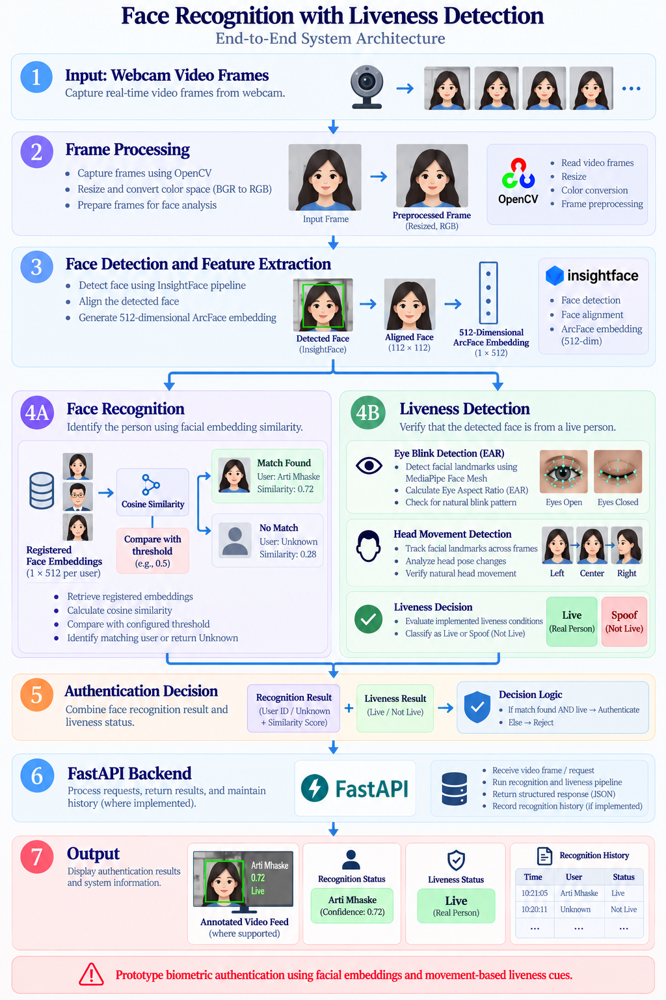
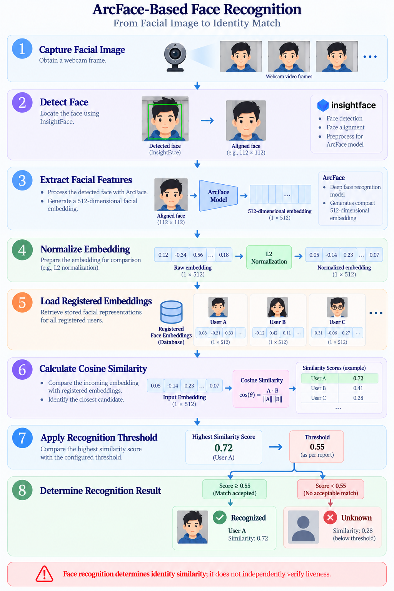
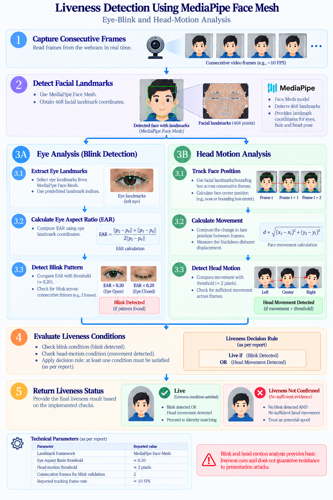
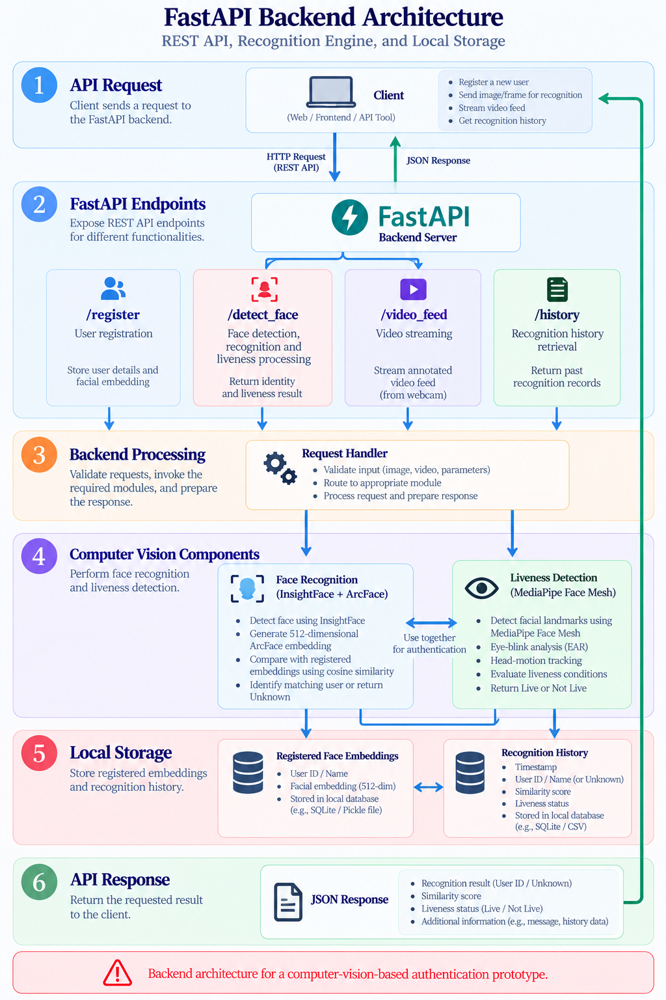
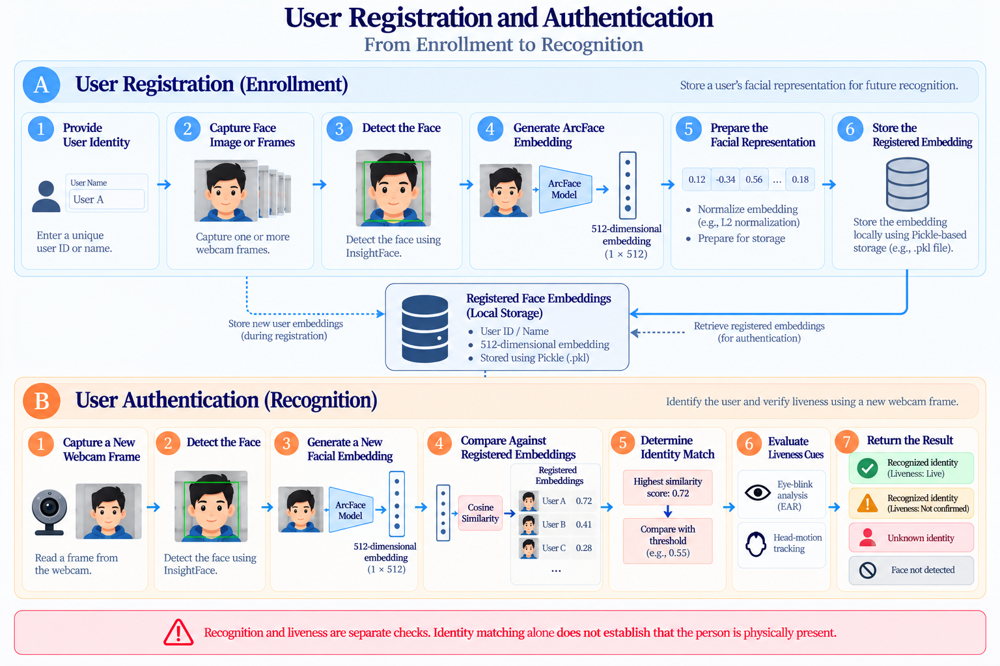

Face Recognition · Project walkthrough
Project flow diagrams
Use the buttons to jump to a workflow, or scroll through the supplied diagrams in sequence.
← Back to Face Recognition project detailsEnd-to-end workflow
Face recognition with liveness detection

Identity matching
ArcFace-based face recognition

Movement-based liveness cues
MediaPipe Face Mesh liveness checks

API and local storage
FastAPI backend architecture

Enrollment and verification
User registration and authentication

Security note: Blink and head-motion heuristics provide basic liveness cues; they do not guarantee resistance to presentation attacks. Treat these diagrams as a description of the prototype, not a security certification.